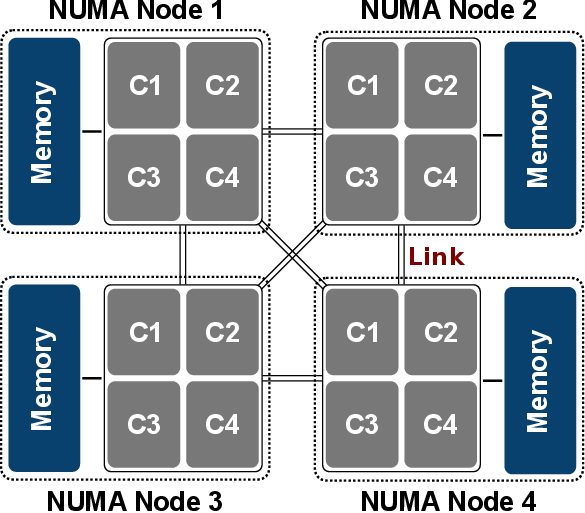

lscpu从sysfs和/proc/cpuinfo收集cpu体系结构信息
Architecture: x86_64 # 架构
CPU op-mode(s): 32-bit, 64-bit # CPU 运行模式
Byte Order: Little Endian # 字节序
CPU(s): 64 # 逻辑CPU数(线程数) = 物理cpu(physical id)数量 * cpu内核(core id)数 * 单核多线程(thread, 如果支持并开启HT)
On-line CPU(s) list: 0-63 # 在线CPU列表id
Thread(s) per core: 2 # 每个核心线程数
Core(s) per socket: 8 # 每个cpu插槽的核数==每颗物理cpu核数
Socket(s): 4 # cpu插槽数
NUMA node(s): 4 # NUMA节点数
Vendor ID: GenuineIntel # cpu品牌
CPU family: 6 # cpu系列
Model: 62 # CPU型号
Stepping: 4 # 步进
CPU MHz: 1200.000 # cpu主频(可能是平均值)
BogoMIPS: 4599.40
Virtualization: VT-x # cpu支持的虚拟化技术
L1d cache: 32K
L1i cache: 32K
L2 cache: 256K
L3 cache: 16384K
NUMA node0 CPU(s): 0-7,32-39 # 每个NUMA节点包括的线程
NUMA node1 CPU(s): 8-15,40-47
NUMA node2 CPU(s): 16-23,48-55
NUMA node3 CPU(s): 24-31,56-63
processor : 0 # 逻辑CPU（线程）的编号, 从 0 到 最大线程数-1
vendor_id : GenuineIntel # 品牌
cpu family : 6 # cpu系列
model : 62 # CPU型号
model name : Intel(R) Xeon(R) CPU E5-4610 v2 @ 2.30GHz # CPU名称与频率
stepping : 4 # 步进
cpu MHz : 1200.000 # 当前线程的实时频率
cache size : 16384 KB
physical id : 0 # 物理CPU编号，从 0 到 主板CPU插槽数-1。拥有相同 physical id 的所有逻辑处理器共享同一个物理插座。
siblings : 16 # 此物理CPU的逻辑CPU数(或线程数) = 物理CPU核心数 * 单核多线程
core id : 0 # 此物理CPU内的，核心编号， 从 0 到 核心数-1。所有带有相同 core id 的逻辑处理器均位于同一个处理器内核上。
cpu cores : 8 # 此物理CPU内的核心数
apicid : 0
initial apicid : 0
fpu : yes
fpu_exception : yes
cpuid level : 13
wp : yes
flags : fpu vme de pse tsc msr pae mce cx8 apic sep mtrr pge mca cmov pat pse36 clflush dts acpi mmx fxsr sse sse2 ss ht tm pbe syscall nx pdpe1gb rdtscp lm consta
bogomips : 4600.23
clflush size : 64
cache_alignment : 64
address sizes : 46 bits physical, 48 bits virtual
power management:
cat /sys/devices/system/cpu/cpu*/cpufreq/scaling_cur_freq| 逻辑CPU | 物理CPU | CPU核数 |
|---|---|---|
| 最大线程数 | 实际服务器插槽上的CPU数目 | CPU核心数 |
逻辑CPU数
cat /proc/cpuinfo|grep "processor"|wc
物理CPU数
cat /proc/cpuinfo|grep "physical\ id"|sort -u|wc
CPU核数
cat /proc/cpuinfo|grep "cores"|sort -u